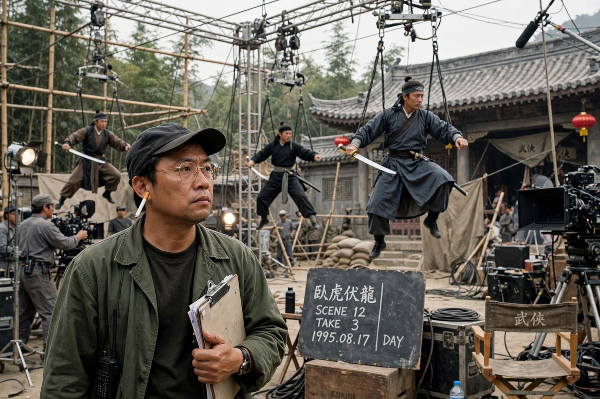

Tsui Hark
| Tsui Hark | |
|---|---|
 | |
| Born | Tsui Man-kong 15 February 1950 (age 76) Saigon, French Indochina (now Ho Chi Minh City, Vietnam) |
| Occupation | Film director, producer, screenwriter |
| Years active | 1978–present |
| Notable work | Zu Warriors from the Magic Mountain (1983), A Chinese Ghost Story (1987, producer), Once Upon a Time in China (1991), Detective Dee series |
Tsui Hark (Chinese: 徐克; born Tsui Man-kong, 15 February 1950) is a Hong Kong filmmaker regarded as a central figure of the Hong Kong New Wave and one of the most influential directors and producers in Chinese-language cinema. Through his company Film Workshop, founded in 1984 with his then-wife Nansun Shi, he reshaped the martial arts and action genres with frenetic editing, elaborate wirework and state-of-the-art special effects.
Early life and New Wave
Tsui was born in Saigon to a Chinese family of Hakka ancestry and moved to Hong Kong as a teenager. He studied film at the University of Texas at Austin, worked in television in New York and Hong Kong, and made his directing debut with The Butterfly Murders (1979), followed by the controversial Dangerous Encounters of the First Kind (1980).
Film Workshop years
Zu Warriors from the Magic Mountain (1983) imported Hollywood effects artists to reinvent the wuxia film. As producer, Tsui oversaw John Woo's A Better Tomorrow (1986), starring Chow Yun-fat, and Ching Siu-tung's A Chinese Ghost Story (1987). As director he made Peking Opera Blues (1986), the Jet Li vehicle Once Upon a Time in China (1991) and its sequels, The Blade (1995) and the animated A Chinese Ghost Story: The Tsui Hark Animation (1997). A mid-1990s stint in Hollywood produced Double Team (1997) and Knock Off (1998) with Jean-Claude Van Damme.
Mainland successes
In the 2010s Tsui became one of mainland China's most bankable directors with the Detective Dee mysteries (2010–2018), The Taking of Tiger Mountain (2014) and the blockbuster war films The Battle at Lake Changjin (2021, co-directed), for a time the highest-grossing Chinese film ever made. His restless, hyperkinetic style influenced a generation that includes Stephen Chow.